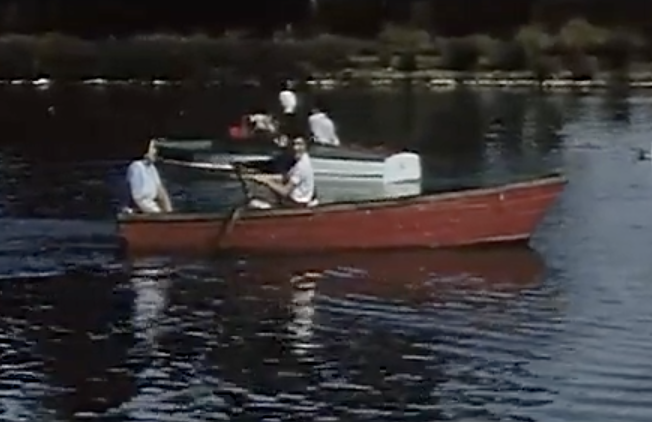
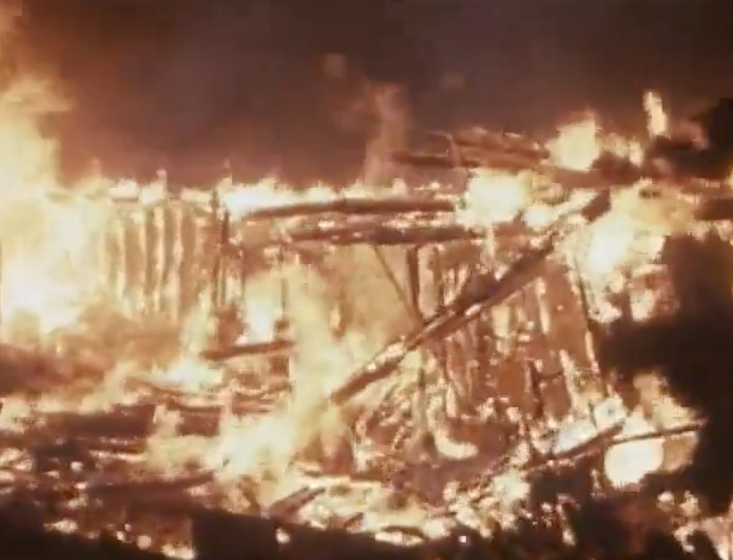
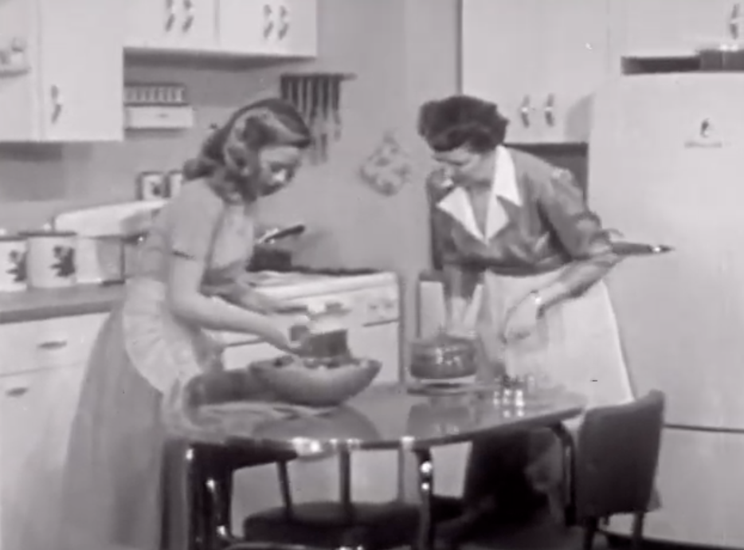
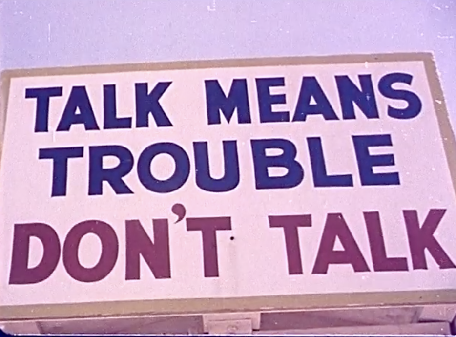

My inspiration for this logo design came from the concept of the mesmerizing visual associated with celestial elements. I wanted to create a design that felt dynamic and engaging while also being professional. The motion of the purple and blue swirls represents the movement of celestial objects, and the yellow stars add a touch of whimsy aesthetic and connection to the planetarium. I started with some rough sketches, exploring different concepts of curves and stars. Once I had a design that I was happy with, I moved to Adobe Illustrator and started creating the logo. I used the tools to create clean shapes and played with the colors. I went with purple and blue because those are the colors that are usually associated with space. When it came to typography, I wanted it to complement the logo without overtaking it, so I went with a bold, sans-serif font. Looking at my final result, I think that the logo effectively captures the theme of space and movement, as well as successfully connects to the Planetarium. If I were to evaluate this as if it weren't my own, I would ask if the colors and elements work together and if any adjustments could make it feel more polished. I would also ask if the balance between the text and the design could be refined. Experimenting with different size ratios or positioning would help create more cohesive, visual imagery. During the critique, I received feedback about the waviness of my swirls. The swirls have some unclean edges and the student suggested that cleaning the swirls up would make the overall design more polished, which I agree with. It was a bit hard because I have never used Illustrator before so I am still getting used to it. During this process, I learned more about the Illustrator tools and how they work. I also learned the importance of iteration and critique. I felt confident in the design, but outside perspectives were able to point out areas that needed improvement that I might not have noticed when I submitted it.


My main goal for this project was to create a utopia that reflected my world of warmth, peace, and positivity. I wanted to design a space that felt both whimsical and inviting, a place I would love to escape, especially during the current events happening in the world right now. The concept of an alternate world naturally led me to consider elements that bring me comfort, such as lots of cats, nature, and a warm color palette filled with vibrant flowers. These are the first aspects I thought of that became the foundation of my two scenes, which depict a surreal paradise with floating islands, cozy environments, and an abundance of furry friends. I am currently reading a fantasy romance series, so my inspiration stemmed from a combination of fantasy landscapes that I got from those books, as well as my love for cozy, nature-filled spaces. I envisioned a world that merges reality with mystical elements, blending the beauty of brightly colored gardens with floating islands, dreamy lighting, and a sense of peace. I also took inspiration from the idea of a cat’s paradise, where they could roam freely, leap between mystical platforms, and relax in the hidden nooks of the trees. I wanted my utopia to feel both adventurous and peaceful. The process of turning these ideas into artwork involved careful composition and layering. I started by selecting a background that conveyed an ethereal quality, such as sunset skies, dense forests, and vibrant landscapes. Then, I introduced floating islands and ladders to create a mystical vertical world, making the environment feel expansive. For the second scene, I focused on a cozy atmosphere within a hollowed-out tree, using small details like fairy lights, books, and a plush couch to enhance the inviting “homey” ambiance. Color played a crucial role in unifying my alternate world. I leaned into warm tones, golden hues, pinkish skies, and the rich greens of plants to create a comforting and dreamlike aesthetic. The vibrant flowers helped make the landscapes feel alive, while the soft, glowing lights in the second scene added a sense of warmth and intimacy. Reflecting on my process, I feel that my ability to create a cohesive, immersive world was successful. The combination of fantasy elements and realistic textures allowed my scenes to feel both magical and tangible. One challenge I faced was ensuring that all the manipulated elements blended naturally. I had to adjust lighting, shadows, and perspective to create a seamless integration of objects within the environment. For example, some feedback I got was to add some shadows, specifically behind the woman in the second scene, so that it has more depth and looks more seamless. Comparing both scenes, I like the first scene of my further view of the utopia because I feel it is more visually interesting, compositionally and color-wise, than the second scene. When I was creating the second scene, I didn't want to add too much because I was keeping it all within the frame of the tree. After all, that is meant to be the hangout spot so I did not want to make it too crowded to the point that it caused chaos. However, I think if I added decorations or shelves that held activities on either side of the tree, it would feel more like a place where people spend hours hanging out there.


In this video, I wanted to explore some recent political events that are stripping away women’s rights because it is something that I am deeply concerned about. Using this archival footage from the 1950s, this video reflects how the oppression of the past continues to echo in the present, which makes the struggle for women’s rights feel disturbingly timeless. Through editing and stark juxtapositions, the video contrasts the idealized imagery of America’s past with unsettling visual metaphors that reflect the current erasure of women’s autonomy. The video opens with idyllic mid-century scenes such as smiling families, children playing, and domestic bliss, accompanied by the upbeat song Mr. Sandman to put the viewer in a peaceful, lively mood. This familiar portrayal of a "simpler time" is quickly disrupted by jarring cuts to an atomic bomb going off, military and industrial expansion, with the sound of an alarm symbolizing the growing forces of control and oppression. In the middle section, I have chaotic, fragmented editing of marching soldiers, burning buildings, and women doing housework, symbolizing the increasing constraints on women’s freedom. During these clips, I added multiple different audios of men disagreeing with women working and a woman saying stuff about not quitting her job/slaving away at home. I layered these audio clips so that you hear two people talking at the same time to create a disorienting sound design that reinforces the tension, which creates a sense of unease that mirrors the present reality. The video concludes with a serene 1950s family dinner with distorted audio of "Lady Liberty" speaking to leave the viewer with a lingering sense of discomfort. My idea for this video was sparked by my concern about the current political climate and the slow erasure of women's rights. Watching the recent events unfold, I couldn't help but draw parallels to the past, specifically around the 1950s, which was a time when women's roles were narrowly defined and societal expectations were high. I found myself thinking about how history seems to repeat itself with oppressive actions continuously targeting women's autonomy. I was happy with the final product because I was worried about not being able to have any current political clips/audio since the Prelinger website is a historic archive. I wasn't sure how I was going to use old videos to get my point across, and I had a really hard time figuring out how to use Premiere Pro. It was likely due to how much was happening on my screen, so I had to play around with the layouts and just spend time figuring out what each editing tool did. Feedback I got from someone was about the scale of my video, which I am confused about, how everyone was able to get it to fit to scale. I'm not sure what went wrong or how to fix it, as I tried to fit to scale/fill to scale on premiere pro and nothing ended up changing with the scale of the video. However, other than the scale of the video being small, I am happy with how the video turned out and how I was able to create these layered and glitched voices to create a sense of discomfort.
   